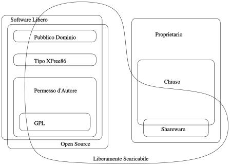

![[Immagine di GNU filosofico]](/graphics/philosophical-gnu-sm.jpg)
Traduzioni di questa pagina
Questo è un dizionario di categorie di software che spesso sono citate nelle discussioni sul software libero. Il suo scopo è di spiegare le sovrapposizioni fra categorie, o quali di esse sono parte di altre.
Un documento correlato è Termini da evitare.

Questo schema di Chao-Kuei rappresenta le differenti categorie di software.
Lo schema è disponibile come file XFig (2k), come immagine vettoriale SVG (8k), come immagine JPEG (16k) e come immagine PNG (23k) ingrandita di 1,5 volte.
Abbiamo anche una lista di traduzioni in varie lingue del termine "software libero".
Se un programma è libero, esso potenzialmente può essere incluso in un sistema operativo libero quale GNU o in versioni libere del sistema GNU/Linux.
Ci sono molti modi diversi per rendere un programma libero---molte questioni di dettaglio, che possono essere risolte in più di un modo e nondimeno rendere un programma libero. Alcune delle possibili variazione sono descritte di seguito.
Il software libero è una questione di libertà, non di prezzo. Ma aziende di software propietario talvolta usano il termine "free software" per riferirsi al prezzo [NdT: il termine free in inglese significa sia gratuito che libero]. Alcune volte ciò significa che si può ottenere una copia del binario senza pagarlo; altre volte significa che una copia è inclusa nel computer che si sta comprando. Questo non ha nulla a che fare con ciò che noi intendiamo per software libero nel progetto GNU.
A causa di questa potenziale confusione, quando una azienda di software dice di produrre free software, bisogna sempre controllare le licenze per verificare se gli utenti hanno effettivamente tutte le libertà che il software libero implica. Talvolta è software libero, altre volte no.
Molte lingue hanno due parole diverse per "free" come libero e "free" come gratuito. Per esempio il Francese ha "libre" e "gratuit". L'inglese ha la parola "gratis" che si riferisce non ambiguamente al prezzo, ma non esiste un aggettivo che si riferisca non ambiguamente alla libertà. È un peccato, perché un tale aggettivo sarebbe molto utile in questo documento [NdT: sarebbe utile in inglese, in italiano il problema non esiste].
Spesso il software libero è più affidabile del software non libero .
Talvolta si usa il termine "dominio pubblico" in un'accezione vaga per intendere "libero" o "disponibile gratuitamente". Tuttavia "di dominio pubblico" è un termine legale che significa precisamente "senza copyright". Per chiarezza, noi consigliamo di usare "di dominio pubblico" solo con questo significato, e di usare altri termini per intendere gli altri significati.
Nel Progetto GNU, quasi tutto il software che scriviamo è coperto da permesso d'autore, perché il nostro obiettivo è di dare ad ogni utente le libertà implicite nel termine "software libero". Vedi Licenza Copyleft per ulteriori approfondimenti sul funzionamento del permesso d'autore e del perché lo usiamo.
Il permesso d'autore è un concetto generale; per utilizzarlo effettivamente per un programma, bisogna usare dei precisi termini di distribuzione, e ci sono molti modi di scrivere dei termini di distribuzione per il permesso d'autore.
(1) [NdT: si tratta di un gioco di parole, che qui viene reso con "permesso di autore": copyright (diritto di autore) è formato dalle parole "copy" (copia) e "right" (diritto, ma anche destra), opposto di "left" (sinistra, ma anche lasciato).]
Se un programma è libero, ma non ha permesso d'autore, alcune copie o versioni modificate possono non essere affatto libere. Un'azienda di software può compilare il programma, con o senza modifiche, e distribuire il file eseguibile come un prodotto software proprietario.
L'X Window System illustra quanto detto: l'X Consortium realizzò X11 con termini di distribuzione che lo rendevano software libero senza permesso d'autore. Volendo, si può ottenerne una copia che ha quelle condizioni di distribuzione ed è software libero. Tuttavia esistono pure versioni non libere, e ci sono note workstation e schede grafiche per PC per le quali le versioni non libere sono le uniche che funzionano. Per chi usa questo hardware, X11 non è software libero.
Un sistema operativo di tipo Unix è composto da molti programmi. Il sistema GNU include tutto il software GNU e molti altri pacchetti come per esempio l'X Window System e TeX, che non sono software GNU.
Abbiamo sviluppato e messo insieme componenti per questo sistema fin dal 1984; la prima versione di prova di un "sistema GNU completo" è del 1996. Oggi, nel 2001, il sistema è affidabile e stiamo lavorando affinché GNOME e ppp vi funzionino. Nel frattempo, il sistema GNU/Linux, una derivazione del sistema GNU che utilizza Linux come kernel, ha avuto un grande successo.
Poiché il fine di GNU è di essere libero, ogni singolo componente nel sistema GNU deve essere software libero. Tuttavia essi non devono essere tutti coperti da permesso d'autore; ogni tipo di software libero è legalmente adeguato ad essere incluso se aiuta a raggiungere gli scopi tecnici. Possiamo usare, e in effetti usiamo, software libero senza permesso d'autore come l'X Window System.
Se un programma è software GNU, diciamo anche che esso è un programma GNU.
Una parte del software GNU è scritto dal personale della Free Software Foundation, ma la maggior parte di esso è frutto del lavoro di volontari. Parte del software offerto dai volontari è coperto da copyright della Free Software Foundation; altro è coperto da copyright di chi lo ha scritto.
Il software semilibero è molto meglio del software proprietario, ma pone ancora dei problemi, e non possiamo usarlo in un sistema operativo libero.
Le restrizioni del permesso d'autore sono progettate per proteggere le libertà essenziali degli utenti. Per noi l'unica giustificazione a qualunque sostanziale restrizione nell'uso di un programma è di impedire ad altri di aggiungere ulteriori restrizioni. I programmi semiliberi hanno restrizioni addizionali motivate da scopi di puro egoismo.
È impossibile includere software semilibero in un sistema operativo libero, in quanto i termini di distribuzione del sistema operativo nel suo complesso sono l'unione dei termini di distribuzione di tutti i programmi del sistema stesso. Aggiungere un programma semilibero renderebbe il sistema nel suo insieme solo semilibero. Ci sono due motivi per i quali non vogliamo che ciò accada:
La Free Software Foundation stessa non è commerciale, quindi a noi sarebbe legalmente possibile l'utilizzo interno di un programma semilibero. Tuttavia non lo facciamo, perché ciò minerebbe i nostri sforzi per ottenere un programma che potremmo anche includere in GNU.
Se c'è un lavoro che deve essere fatto con software, finché non abbiamo un programma libero per svolgerlo, il sistema GNU ha una lacuna. Dobbiamo dire ai volontari «non abbiamo ancora un programma che svolga questo lavoro in GNU, ma speriamo che voi ne scriviate uno». Se noi stessi usassimo un programma semilibero, saremmo meno credibili nel nostro invito ai volontari; toglierebbe lo slancio (verso di noi e verso altri che potrebbero ascoltare le nostre opinioni) a scriverne una versione libera. Perciò non lo facciamo.
La Free Software Foundation segue la regola di non installare programmi proprietari sui propri computer se non temporaneamente per lo specifico scopo di farne una versione libera. A parte questo, siamo convinti che non esistano giustificazioni possibili per installare un programma proprietario.
Per esempio, ci siamo sentiti autorizzati ad installare Unix sul nostro computer negli anni '80, poiché lo usavamo per scrivere una versione libera di Unix. Oggi che i sistemi operativi liberi sono disponibili, la giustificazione non è più valida; abbiamo eliminato tutti i nostri sistemi operativi non liberi, e su ogni nuovo computer che installiamo deve girare un sistema operativo completamente libero.
Non insistiamo perché gli utenti di GNU, o i volontari di GNU, debbano seguire questa regola. È una regola che abbiamo stabilito per noi stessi. Ma speriamo che anche voi decidiate di seguirla.
Lo shareware non è software libero, nè semilibero. Questo per due motivi:
Per esempio, GNU Ada è sempre distribuito sotto licenza GNU GPL, ed ogni copia è software libero; ma i suoi sviluppatori vendono contratti di assistenza. Quando i loro agenti di vendita parlano con i possibili acquirenti, talvolta si sentono dire, «ci sentiremmo più tranquilli con un compilatore commerciale». Gli agenti replicano, «GNU Ada è un compilatore commerciale; si dà il caso che si anche software libero.»
Per il Progetto GNU, l'enfasi è all'inverso: ciò che importa è che GNU Ada sia software libero; che sia o meno software commerciale non è una questione cruciale. Tuttavia, l'ulteriore sviluppo di GNU Ada che risulta dalla commercializzazione dell'assistenza è indubbiamente un beneficio.
Aiutateci a diffondere la consapevolezza che il software libero commerciale è possibile. Per esempio sforzandovi di non dire "commerciale" quando intendete "proprietario".
Traduzioni di questa pagina:
[
Català
| Česky
| Deutsch
| English
| Español
| Français
| Bahasa Indonesia
| Italiano
| 日本語
| polski
| Português
| Русский
| Slovensko
| Српски
]
Ritorna alla pagina principale di GNU.
Per informazioni sulla FSF e GNU rivolgersi, possibilmente in inglese,
a
gnu@gnu.org.
Altri modi per contattare
la FSF.
Inviate link non funzionanti e altre correzioni relative alle pagine
web (o suggerimenti) a
webmasters@gnu.org.
Copyright (C) 1996, 1997, 1998, 1999, 2000, 2001 Free Software Foundation, Inc.,
51 Franklin St, Fifth Floor, Boston, MA 02110, USA
La copia letterale e la distribuzione di questo articolo nella sua
integrità sono permesse con qualsiasi mezzo, a condizione
che questa nota sia riprodotta.
Aggiornato: $Date: 2011/12/30 05:18:24 $ $Author: ineiev $
{kind=link}
{kind=link}
{kind=link}